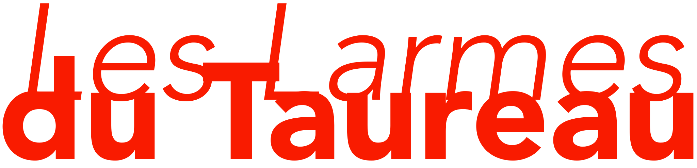
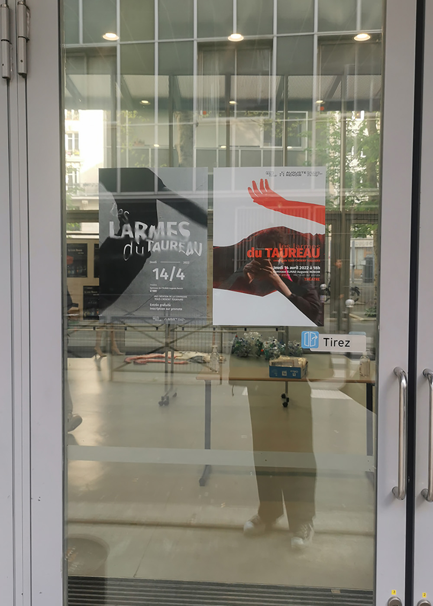
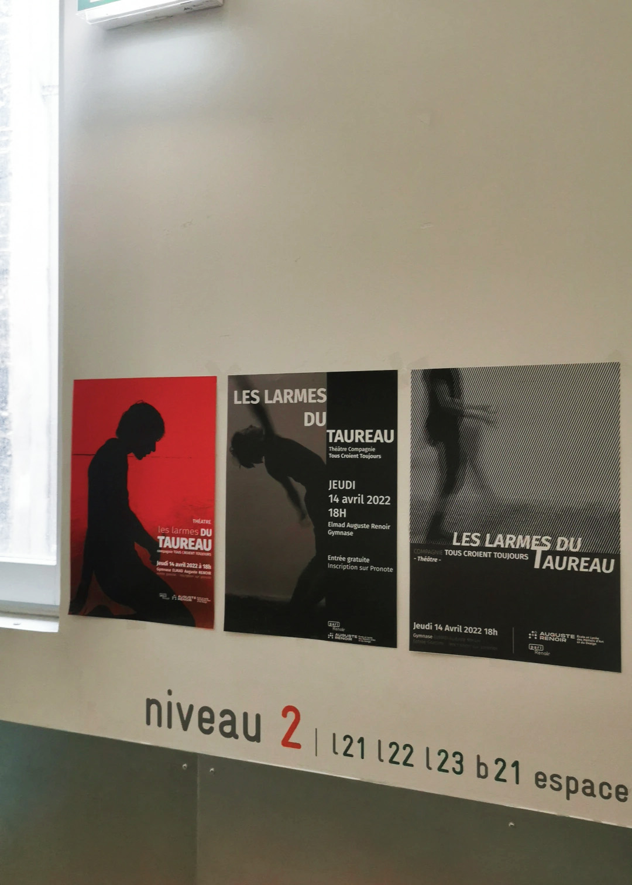
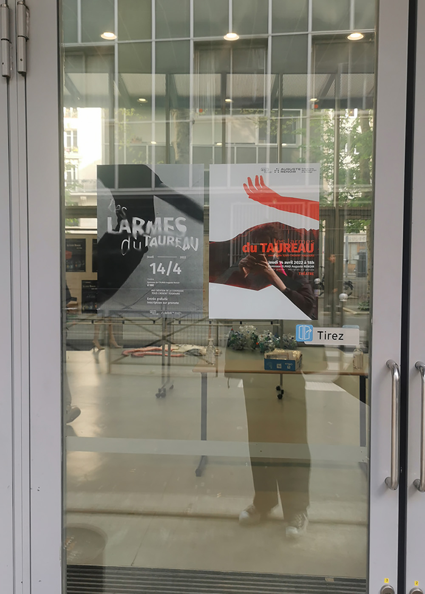
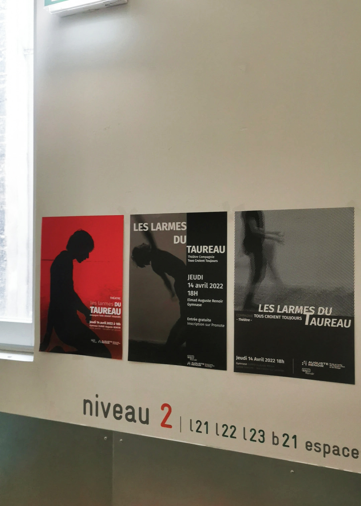
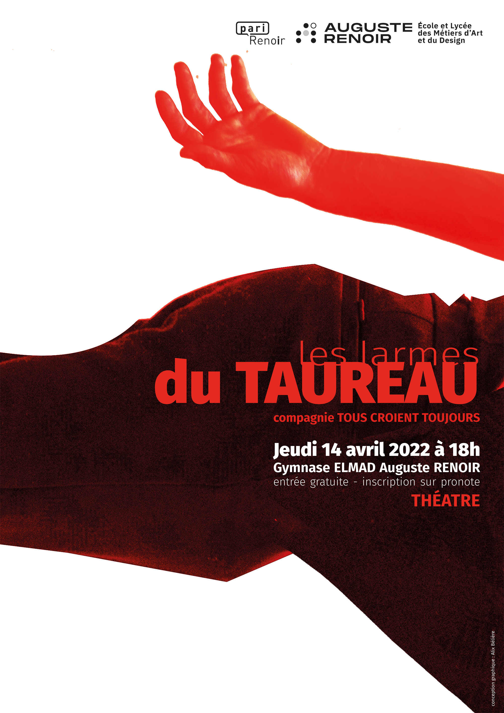
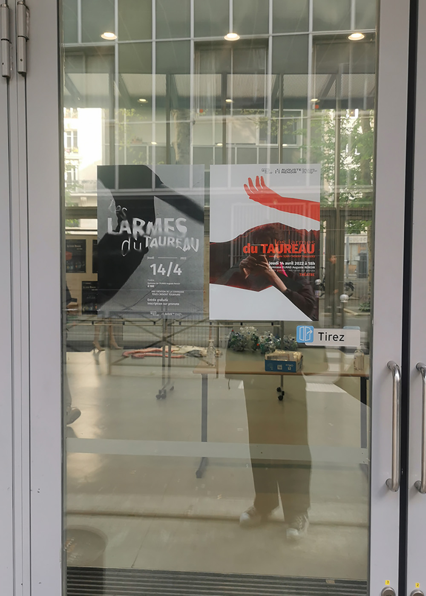
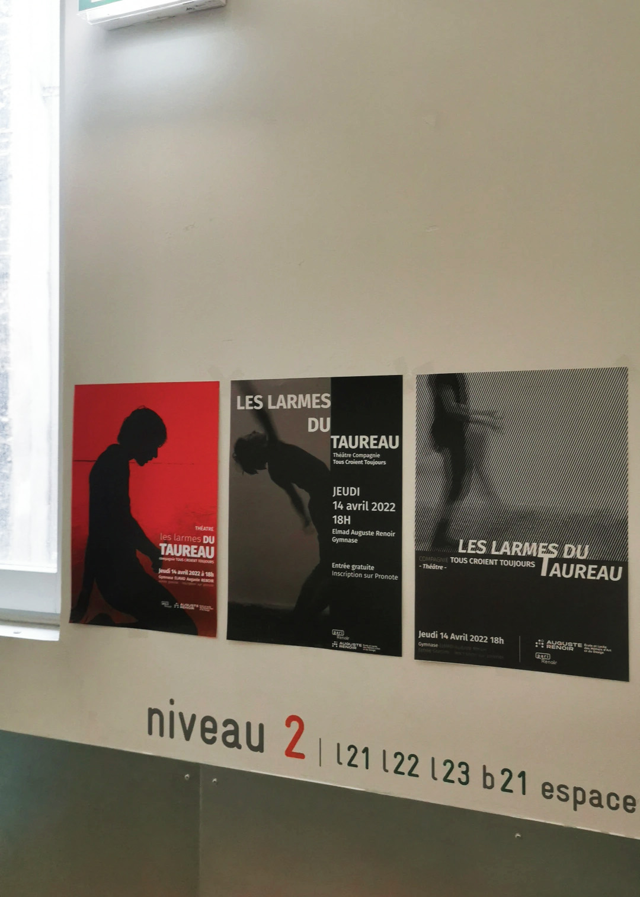

 



La compagnie Tous Croient Toujours nous a demandé de réaliser des affiches pour communiquer sur leur représentation au sein de notre établissement.
J’ai décidé par la couleur sanglante et le traitement typographique de montrer la fatalité de l'histoire et la confrontation entre le taureau et le personnage, qui est un toréador, ainsi que la chaleur, la force et la fatalité qui en découlent. L’animalité est commune aux deux personnages, et je l'ai representée par l'ambiguïté entre la forme d’une tête de taureau et la gestuelle du toréador. L’aspect découpé accentue l’effet sauvage. Voici deux de mes affiches parmis les 10 finales qui ont été sélectionnées.


